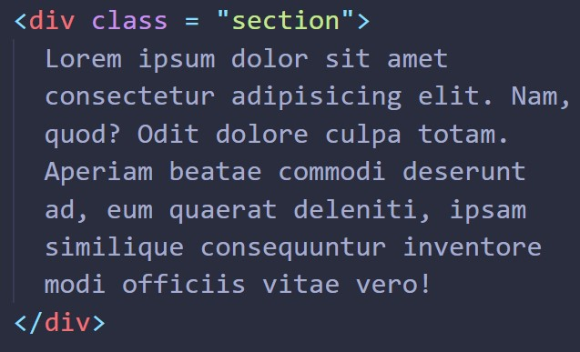
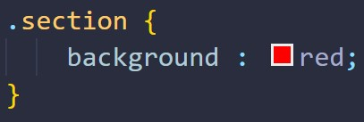
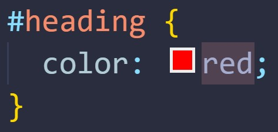

What are the best practices associated with using classes vs ids?
Best practises for using classes
When you have multiple HTML elements that you want to style in a similar manner (e.g. give a particular set of elements the same background color), you should give each one of them the same class.
For example, if your website is made of multiple divs, and you want each div to have a red background, you could create a class called section.

In the section class, you could write the CSS code: "background: red;".

After applying the "section" class to every div, they will all have a red background.
Best practises for using ids
On the other hand, an id should only be used when you want to style one particular element. An id should not be used on multiple elements. For example, if you know your page will only have one h1 header, then you could use an id on that h1 for styling.
So, if you want to style that one particular h1 so that it has a red font color, you could create an id called “heading”.
Then, after you apply the “heading” id to the h1, you can add the following code for the id: “color: red;”

After applying the "heading" id to the h1, it will now have a red font color.